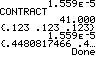

[TEXAS INSTRUMENTS] [ticalc.org] [Omnimaga] [TI planet.org] [Cemetech] [TI-räknargrupp]
Du behöver en TI grafritande miniräknare för att kunna köra dessa program. Om du har en TI Connectivity Cable/TI-Graph Link kan du ladda ner dessa program i miniräknaren i stället för att knappa in dem. (Jag använder en hembyggd 4$-länk.) Dokumentation och ASCII-listningar ingår. Nu finns även binärfiler för TI-82, TI-82 STATS, TI-83, TI-83 Plus & TI-84 Plus (inkl. Silver Edition), se länkarna 82, 82S/83 respektive 82PY/83+/84+. TI-82 STATS liknar mer TI-83 än TI-82 och använder 82S-länkarna. TI-82 Advanced EDITION PYTHON liknar mer TI-83 Plus än TI-82 och använder 82PY-länkarna.
|
Aritm tränar dig i enkel huvudräkning. Detta program lär sina
användare additions-, subtraktions-, multiplikations- och
divisionstabellerna. Aritm finns också för vissa CASIO-räknare, mobiltelefoner
med Android eller Java ME, webbläsare med Java SE, och OpenOffice/LibreOffice
Calc, se http://aritm.orbin.se/. |
| 15
statistikprogram för TI-82. En del är
pedagogiska, t.ex. förevisar centrala gränsvärdessatsen.
Andra ersätter statistiska tabeller, eller ritar statistiska
grafer. 82 |
 |
Ett dagar
mellan dagar spel. 82 82S/83 82PY/83+/84+ |
 |
Detta
program delar upp heltal i primtalsfaktorer. 82 82S/83 82PY/83+/84+ |
 |
Detta
är ett "Fast Fourier Transform"-program. 82 |
| Demonstrerar
Gauss-Jordan-elimination. 82 |
| Ett
golfspel. 82 |
|  | Ickelinjär
minimering med Nelder-Mead:s metod. Användbar för modellering och regression. 82 |
| Beräknar
arean under en normalfördelningskurva för alla utfall. 82 |
| Polär
plottning av allmänna andragradskurvor. 82 82S/83 82PY/83+/84+ |
| Undersökning
av polynomfunktioner och rationella funktioner. 82 |
 |
"Animerad"
invertering av pixlar i en Pic fil. 82 |
| Du matar
in punkter grafiskt och sen drar programmet en
mjuk kurva igenom dem, en likformig kubisk spline. 82 82S/83 82PY/83+/84+ |
 |
Omvandlar
tal i arabisk (europeisk) notation till romerska
siffror. Hittar också den minimala romerska formen. 82 82S/83 82PY/83+/84+ |
 |
v1.0 av
en praktisk komplextalskalkylator. Menydriven. ASCII-listningar ingår. 82 82S/83 82PY/83+/84+ |
 |
Beräknar
den största gemensamma delaren hos en LISTa av heltal.
Ett MGN program ingår också. 82 82S/83 82PY/83+/84+ |
 |
Omvandlar
tal mellan olika baser. 82 82S/83 82PY/83+/84+ |
| Simulerar
en bankkö grafiskt. Använder den
negativa exponentialfördelningen. 82 82S/83 82PY/83+/84+ |
| En
Mandelbrot-mängdsplottare. Tar
ungefär en timme att köra. ZOOMning är möjlig.
Belyser 'End'-problematiken. Toccata av J. S. Bach. 82 82S/83 82PY/83+/84+ |
|
Orbin |